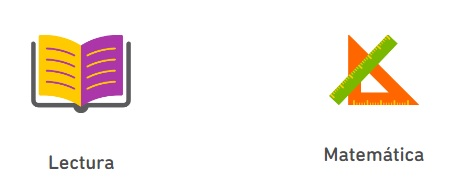
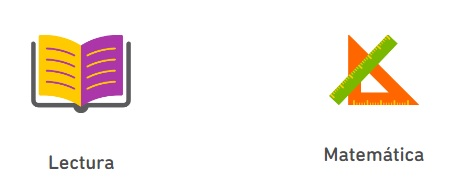
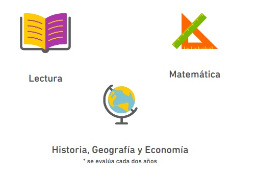
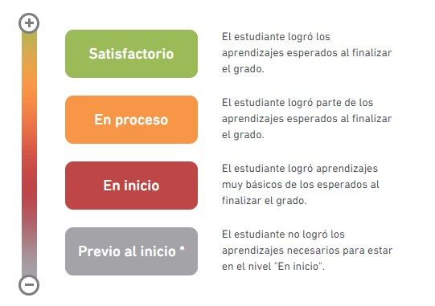

Primaria
A los estudiantes de 4.° grado de primaria se los evalúa en:
A los estudiantes de 4.° grado de primaria se los evalúa en:
A los estudiantes de 4.° grado de primaria de colegios de educación intercultural bilingüe (EIB) se los evalúa en:

A los estudiantes de 2.° grado de secundaria se los evalúa en:
A continuación se presentan los resultados por colegio, agrupando a sus estudiantes evaluados por niveles de logro:
